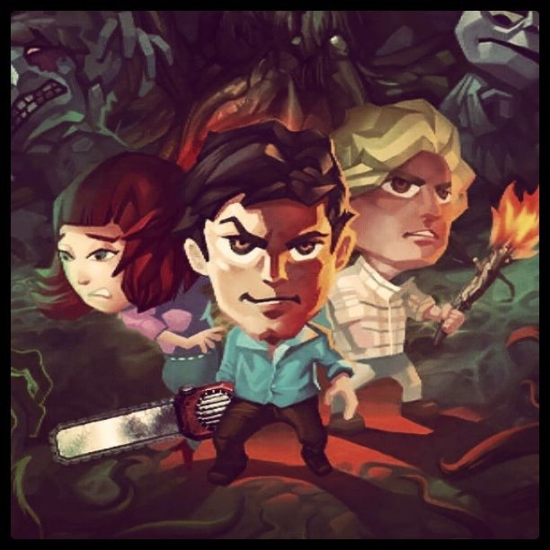

Tue, 07 Jun 2011 03:44:00 · evildead · games · horror · SamRaimi · trigger · iPhone · iPad
our much anticipated evil dead game for iphone and

Our much anticipated Evil Dead Game for iPhone and iPad is now out on the App store! If you always wanted to whack some deadites, then this is your chance! Axe swing? Check. Chainsaw galore? Double check! Hordes of nasty possessed plants, quicksand traps, and evil priests? Check, check and check! So much gore that you literally have to wipe them off your screen!
Try the game, download it on App store… and have fun! Stay tuned for more updates on the game that includes some insane Survival Modes and whatnot!